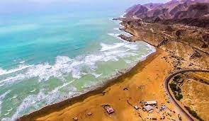
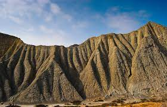
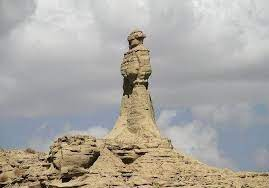
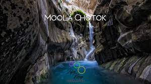

Balochistan, the largest of the four provinces of Pakistan, spreads over an area of 347,190 Sq, Kms., forming 43.6 per cent of the total area of Pakistan. It has clustered population and is smallest in proportion as compared to that of other provinces. Its population, according to 1998 census, is xx million, having a low density per square kilometer. Physically, Balochistan is an extensive plateau of rough terrain divided into basins by ranges of sufficient heights and ruggedness. Broadly, Balochistan geographic area can be divided in to four distinct zones: Upper high lands, lower high lands, plains, and deserts.
Places to Visit in Balochistan:Kund Malir' is a beach in Balochistan, Pakistan located in Hingol National Park, about 150 kilometers (93 mi) from Zero-Point on Makran Coastal Highway.It is located 236.8 kilometers (147.1 mi) west of Karachi, the largest city in Pakistan.The drive between Kund Malir and Ormara is considered to be scenic. The area is part of Hingol National Park, the largest in Pakistan.
It is part of the largest national park for the protection of endangered species in the country. The park is also home to wild Sindh Ibex, Balochistan Urial, and Chinkara Gazelle. Located approximately 200 kilometers (120 miles) northwest of Karachi, Hingol National Park features several distinct ecosystems.
The Princess of Hope is a statue, founded in Hingol National Park lies on the Makran coast in Balochistan and approximately 190 km from Karachi. The name Princess of Hope was given by Hollywood actress Angelina Jolie on her visit to this area.
It is situated approximately 105 kilometres (65 mi) north-east of Khuzdar at an elevation of 1,237 metres (4,058 ft). Surrounded by tall cliffs, the cascading waterfall, known as Chotok, is one of the biggest waterfalls of Sub Tehsil Moola.
